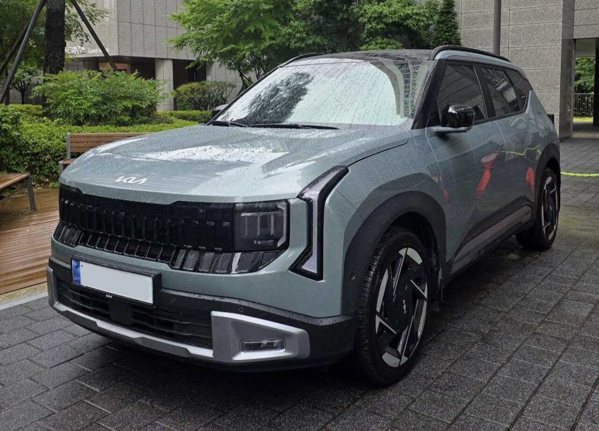
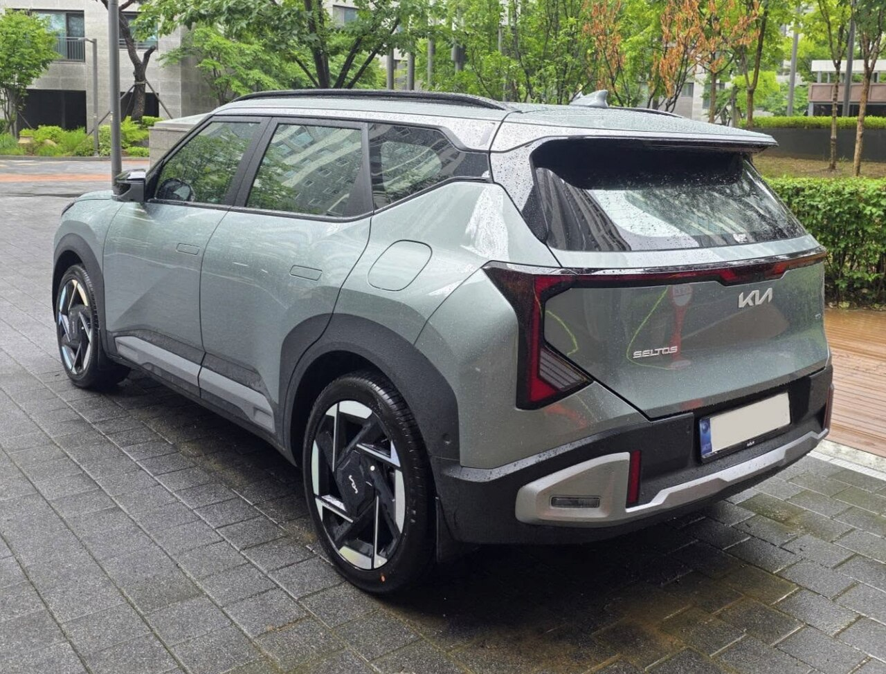
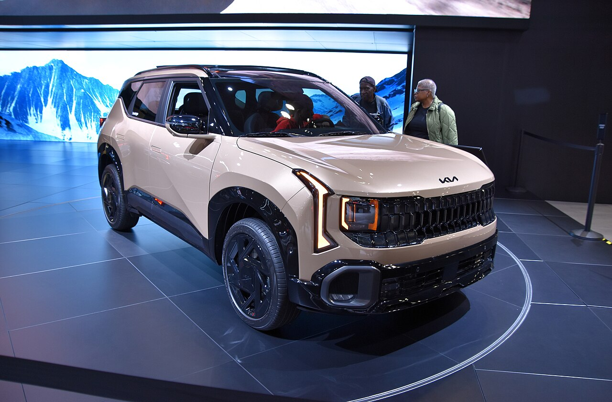

▲ 완전변경을 거쳐 3세대로 돌아온 기아 셀토스. 마침내 하이브리드 파워트레인을 품었다 ⓒ 기아 공식
2020년 데뷔 이후 국내외 소형 SUV 시장에서 꾸준히 사랑받아온 기아 셀토스가 2026년 1월, 3세대(코드네임 SP4) 완전변경 모델로 돌아왔습니다. 내연기관 라인업은 지난 6월부터 이미 판매가 시작됐고, 국내 소비자들이 가장 기다려온 1.6 하이브리드 모델은 올해 4분기 말부터 2027년형으로 순차 출고될 예정입니다.
정식 출고를 앞두고 진행된 미디어 대상 사전 시승 행사와 국내외 시승기를 종합해, 셀토스 하이브리드의 실제 주행 감각과 커진 체격, 그리고 실구매자 입장에서 가장 궁금한 '가성비 트림 조합'까지 한 번에 정리해 드립니다.
1. 하이브리드 실주행 연비 & 정숙성 — 도심·고속도로 시승기

▲ 수직형 LED 램프와 커진 라디에이터 그릴이 인상적인 3세대 셀토스 실물 전면부 ⓒ Avante2025, Wikimedia Commons (CC BY 4.0)
셀토스 하이브리드의 심장은 1.6L 스마트스트림 하이브리드 전용 엔진(105마력)과 44.2kW(약 60마력)급 전기모터의 조합입니다. 시스템 합산출력은 141마력이며, 변속기는 6단 듀얼클러치(DCT)를 물렸습니다. 수출형에는 현대차그룹 최초로 구동축 대신 전기모터로 후륜을 굴리는 e-AWD가 적용돼 눈길을 끕니다.
공인 복합연비는 전륜구동 기준 18.5~19.5km/L 수준으로 동급 최고 효율을 노립니다. 실제 도심·고속도로 혼합 주행에서는 17km/L 안팎의 실연비가 나온다는 시승기가 다수 확인됩니다. 무엇보다 인상적인 부분은 정숙성입니다. 기존 1.6 터보 모델 대비 승차감이 확실히 부드러워졌고, RPM이 올라가는 구간에서도 실내 소음 유입이 크게 줄었습니다. 과속방지턱을 넘을 때의 충격 흡수도 안정적이어서, 전반적인 주행 완성도가 한 단계 올라갔다는 평가입니다.
2. 커진 체격, 넓어진 실내 — 코나·스포티지 포지션 비교

▲ 3세대 플랫폼 적용으로 넉넉해진 셀토스의 리어 오버행과 트렁크 게이트 ⓒ Avante2025, Wikimedia Commons (CC BY 4.0)
3세대 플랫폼을 새로 적용하면서 체격도 눈에 띄게 커졌습니다. 전장 4,395mm, 전폭 1,800mm, 전고 1,620mm, 휠베이스 2,630mm로, 2열 레그룸과 트렁크 용량(437L, 2열 폴딩 시 1,330L)이 모두 여유로워졌습니다. 그 결과 소형 SUV의 상징이었던 현대 코나보다 실내 공간 활용성과 가격 경쟁력에서 앞선다는 평가가 나오고, 한 체급 위인 기아 스포티지의 포지션까지 넘본다는 말이 나올 정도입니다.
다만 실제 비교 시승 결과, 승차감의 결은 조금 다릅니다. 스포티지 하이브리드(실연비 약 14km/L)는 셀토스(실연비 약 17km/L)보다 연간 연료비가 더 들지만, 한층 차분하고 고급스러운 실내와 장거리 안정감에서는 우위를 보입니다. 반대로 같은 예산이라면 연비는 셀토스가 압도적으로 유리하고, 넓은 4WD 옵션이 꼭 필요하지 않다면 셀토스 하이브리드만으로도 충분하다는 게 중론입니다.
3. "이 옵션은 빼도 됩니다" — 실구매 가성비 트림 가이드

▲ 최상위 오프로드 지향 트림인 셀토스 X-Line. 하이브리드는 트렌디·프레스티지·시그니처·X-Line 4개 트림으로 구성된다 ⓒ Charles, Wikimedia Commons (CC0)
가격은 트림별로 트렌디 2,898만 원, 프레스티지 3,208만 원, 시그니처 3,469만 원, X-Line 3,584만 원부터 시작합니다(동급 가솔린 대비 약 367만~421만 원 높은 가격대). 다만 옵션 구성에는 여전히 아쉬운 지점이 있습니다. 기본 트림에는 레인 센서가 빠져 있어 별도 패키지를 추가해야 하고, 기본 도어 핸들도 수동식이라 개폐감이 다소 불편하다는 지적이 꾸준합니다.
실구매 관점에서는 트렌디 트림 + 컨비니언스 패키지(약 64만 원) 조합을 추천합니다. 이 패키지에는 1열 통풍시트, 프리미엄 바이오 인조가죽 시트, 하이패스 자동결제 시스템이 묶여 있어 체감 만족도가 높습니다. 반면 드라이브 와이즈(119만 원)와 모니터링 패키지(104만 원)는 과감히 생략해도 무방합니다. 드라이브 와이즈 없이도 기본 차로 유지 보조가 꽤 안정적이어서, 굳이 내비게이션 연동 크루즈나 자동 차로 변경 기능에 223만 원을 더 쓸 필요는 없다는 평가입니다. 전동 트렁크, 앰비언트 라이트, 전자식 차일드락, 파노라마 선루프 역시 혼자 또는 둘이 주로 타는 운전자라면 없어도 충분합니다. 이렇게 구성하면 약 3,200만 원대에 하이브리드의 정숙성과 연비, 커진 체격까지 챙길 수 있습니다.
4. 종합 평가 — 이런 분에게 추천합니다
3세대 셀토스 하이브리드는 "가솔린 소형 SUV"라는 기존 이미지를 벗고, 연비와 정숙성을 동시에 챙긴 실속형 패밀리카로 진화했습니다. 좁은 실내와 부족한 하이브리드 옵션 때문에 구매를 미뤄왔던 소비자라면 이번 3세대 모델이 만족스러운 답이 될 가능성이 큽니다.
다만 4WD와 고급스러운 승차감을 최우선으로 따진다면 스포티지 하이브리드가, 예산을 최대한 낮추고 싶다면 코나가 여전히 대안이 될 수 있습니다. 셀토스 하이브리드는 "합리적인 가격대에서 연비와 공간을 동시에 잡고 싶은" 실사용자에게 가장 유리한 선택지로 자리매김할 전망입니다.